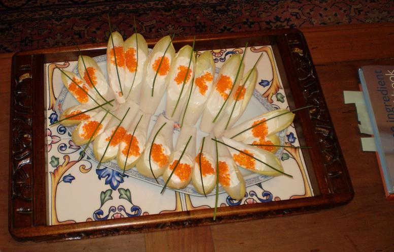

Recette n°176 : chicons aux oeufs de truite et ciboulette
sur lit de fromage blanc

Ingrédients :
- 2 beaux chicons bien frais et bien immaculés
- un pot de 250 g d'un bon fromage blanc frais à 20% (sniff!) de
matière grasse
- un petit pot d'oeufs de truite
- quelques brins de ciboulette fraîche
Préparation :
- prélever 4 feuilles de chicons par convive environ
- les disposer sur un plat de service bien à plat
- mettre dans chaque feuille une cuiller à café de
fromage blanc, une demi-cuiller d'oeufs de truite, un brin de ciboulette
- conserver au frigo pas plus que quelques heures avant de servir avec
un bon crêmant rosé d'Alsace
Observations :
1 - préparé pour Annie de Chevré, Christine
et Michel de Bourges, et nous le 24 janvier 2008 : pas une miette n'est
restée !
2 - à défaut de ciboulette, on peut mettre de l'aneth
3 - à défaut de fromage blanc, on mettre une chantilly
non sucrée